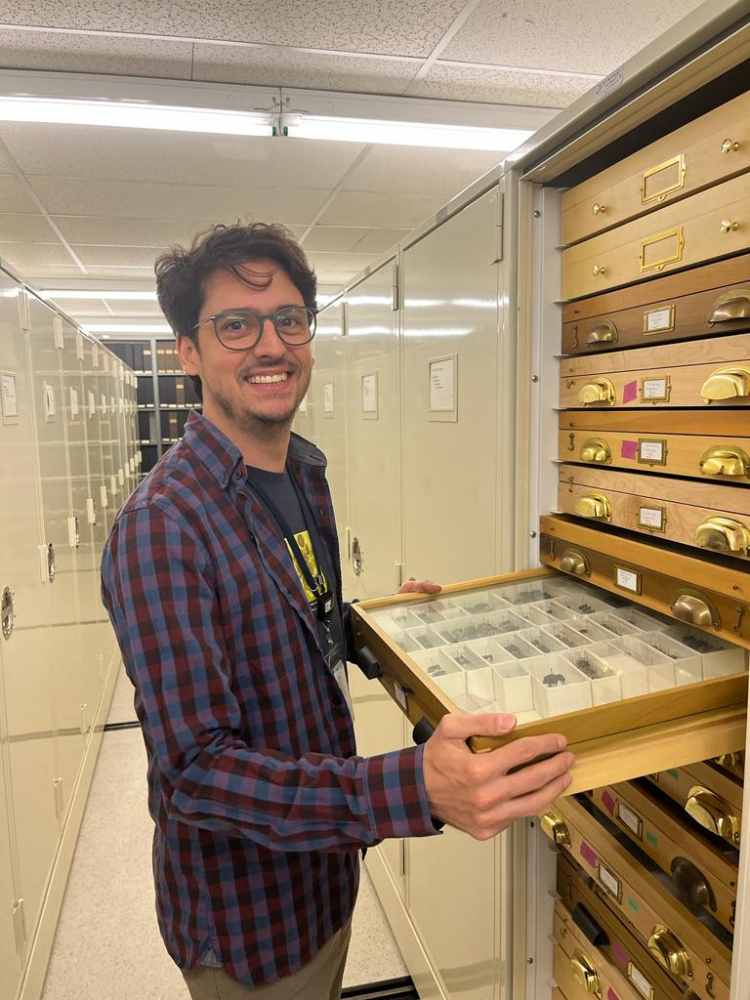

Entomologist, Ph.D.
About meDiego de S. Souza
I am a postdoctoral researcher in the de Medeiros Insect Flower Visitors Lab at the Field Museum of Natural History, USA. My expertise spans a wide range of biodiversity-related areas, including taxonomy, phylogenetics, molecular systematics, and comparative genomics of insects.
I am particularly interested in longhorn beetles (Cerambycidae) and weevils (Curculionidae), two of the largest groups of phytophagous beetles. My current projects focus on the phylogenomics and evolution of these clades, with a special emphasis on understanding how host-plant use shapes evolutionary patterns and contributes to the diversification and macroevolution of phenotypic diversity. I am also interested in how biodiversity inventories, field surveys, and museum collections provide the baselines that inform conservation and land management at landscape scales.
